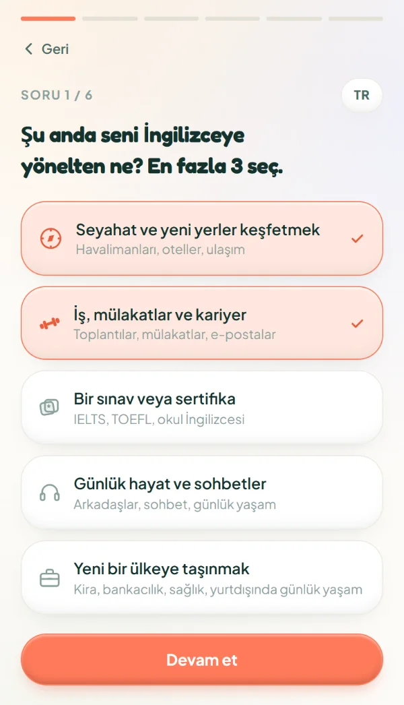
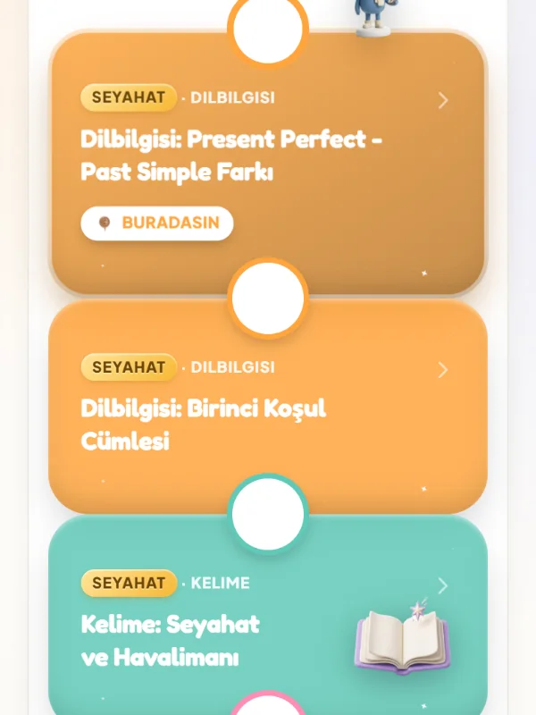
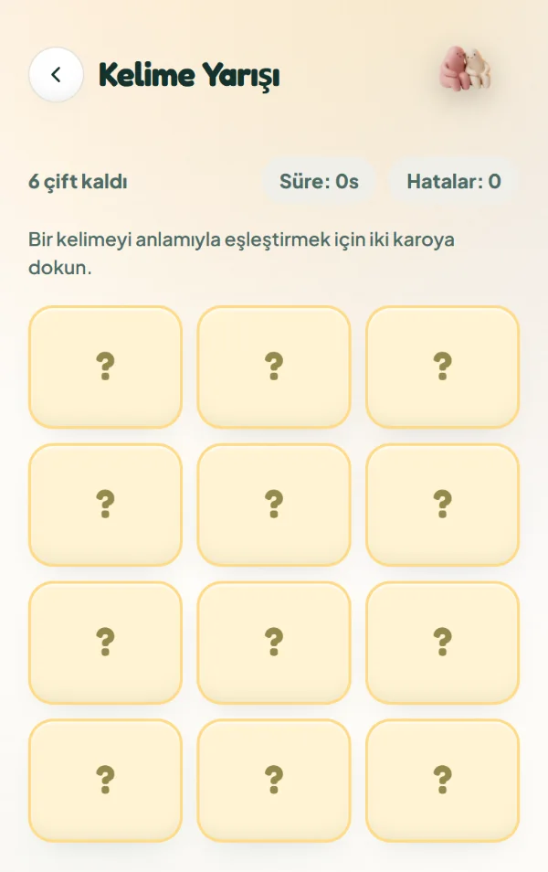
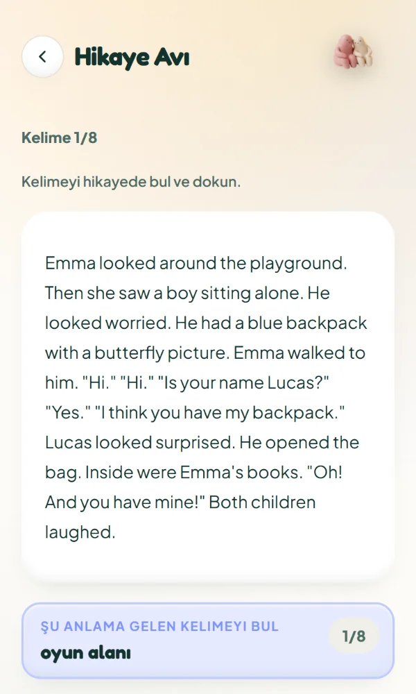
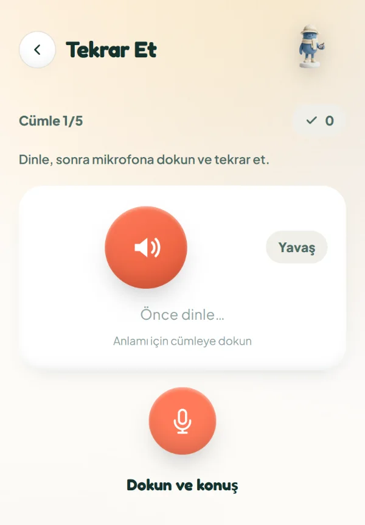

FE School · İngilizce
İngilizceyi hedefine göre, oynayarak öğren.
Ücretsiz uygulama, istersen birebir özel ders.
Uygulama iPhone'da tarayıcıdan açılır.


Hedefin ne?
Seçtiğin hedef, öğrendiğin her şeyi belirler.

Kariyer ve İş
toplantı, e-posta, mülakat
Detaylar →
Seyahat
havalimanından restorana

IELTS Sınavı
gerçek format, sana göre plan
Detaylar →
Göç
yeni ülkede günlük hayat

Günlük İngilizce
sohbet, dizi, sosyal medya
FE App · ücretsiz
Her gün bir durak.
Yol haritan, yedi oyun ve hikayeler. Ücretsiz, Türkçe arayüzle.
iPhone'da tarayıcıdan açılır.

Oyunlar
Her durakta bir oyun.
Yedi oyun, yol haritanın içinde. Kelimeyi yakala, cümleyi kur, duyduğunu yaz, tuzaktan kaç.



Kelime Yarışı
kelimeyle anlamı eşleştir
Tuzak Kaçışı
dilbilgisi tuzaklarından kaç
Hikaye Avı
hikayede kelime avla
Cümle Kur
parçalardan cümle kur
Kelime Tombalası
duy, bul, işaretle
Tekrar Et
dinle, sesli söyle
Dinle ve Yaz
duyduğunu yaz
Bir sahneye gir.
Kafede bir sohbet. Bir seçim yap, İngilizcenin nasıl ilerlediğini gör.

Yöntem · SELIF
Yaşadığını daha kolay hatırlarsın.
Kelimeler bir hikayenin içinde gelir. Sen de o sahnede konuşur, başkasının yerine geçersin. Tempo hep sana göre.
SHikaye
kelimeler hikayeyle gelir
EEmpati
onun yerine geç, konuş
LGerçek dil
kitabın atladığı ifadeler
Iİçine dal
video, podcast, sesli hikaye
FEsneklik
tempo ve hedef senin
Öğrenci Kulübü
Birebir online İngilizce özel ders.
Uygulama herkese ücretsiz. Öğrenci Kulübü, Farin'den özel ders alanlar için.
Birebir online ders
Farin ile, konuşma ağırlıklı.
VIP yol haritası
Seviyene, tarzına ve üç hedefine göre.
10 derslik programlar
Dersler adım adım ilerler.
Kulüp paketleri
İlk Adım
Keşif
Kahraman Yolculuğu
Ödeme ve saatler WhatsApp'ta netleşir.

Merhaba, ben Farin.
11 yıldır İngilizce öğretiyorum, beş dil konuşuyorum. FE School'un yöntemini, yol haritasını ve oyunlarını bu deneyimle kurdum.
- 11 yıl
- 5 dil
- Premier TEFL (120 saat)
Merak edilenler
Sıkça sorulan sorular
Uygulama gerçekten ücretsiz mi?
Evet. Hesap için adın ve bir şifre yeter. Kart istemez.
İlk ders gerçekten ücretsiz mi?
Evet. İlk Adım dersinde tanışır, seviyeni ve hedefini netleştiririz. Kart bilgisi istenmez.
Hiç İngilizce bilmiyorum, olur mu?
Olur. Uygulama da dersler de A1'den başlar.
Dersler nasıl işliyor?
Birebir, online ve konuşma ağırlıklı. Süre ve sıklığı birlikte belirleriz.
Uygulama ile ders birlikte mi kullanılır?
İstersen. Uygulama tek başına da çalışır; ders, yanına bir öğretmen ekler.
Ödeme nasıl?
Paketini seç, ayrıntıları WhatsApp'ta birlikte netleştirelim.
Yolun burada başlıyor.
Ücretsiz. Hesap için adın ve bir şifre yeter.
Öğrenmen gerektiği için değil, gidecek bir yerin olduğu için.